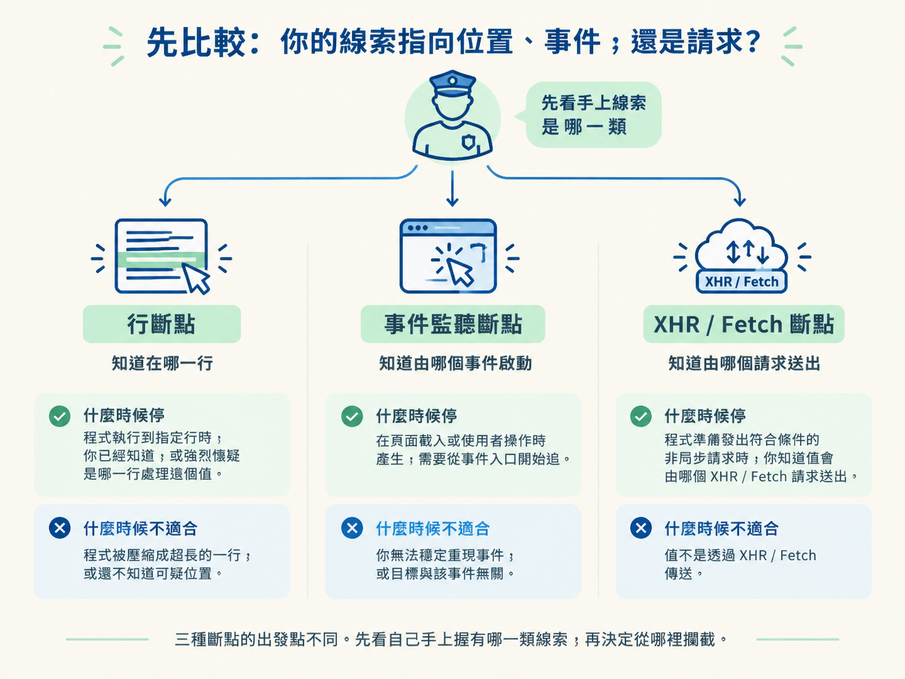
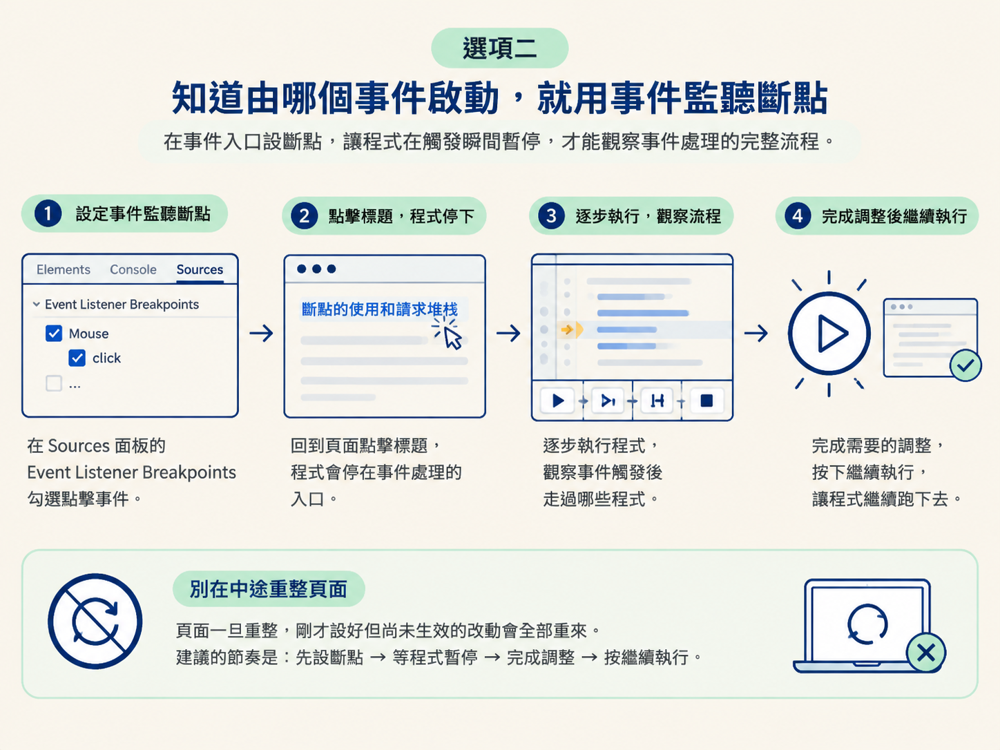
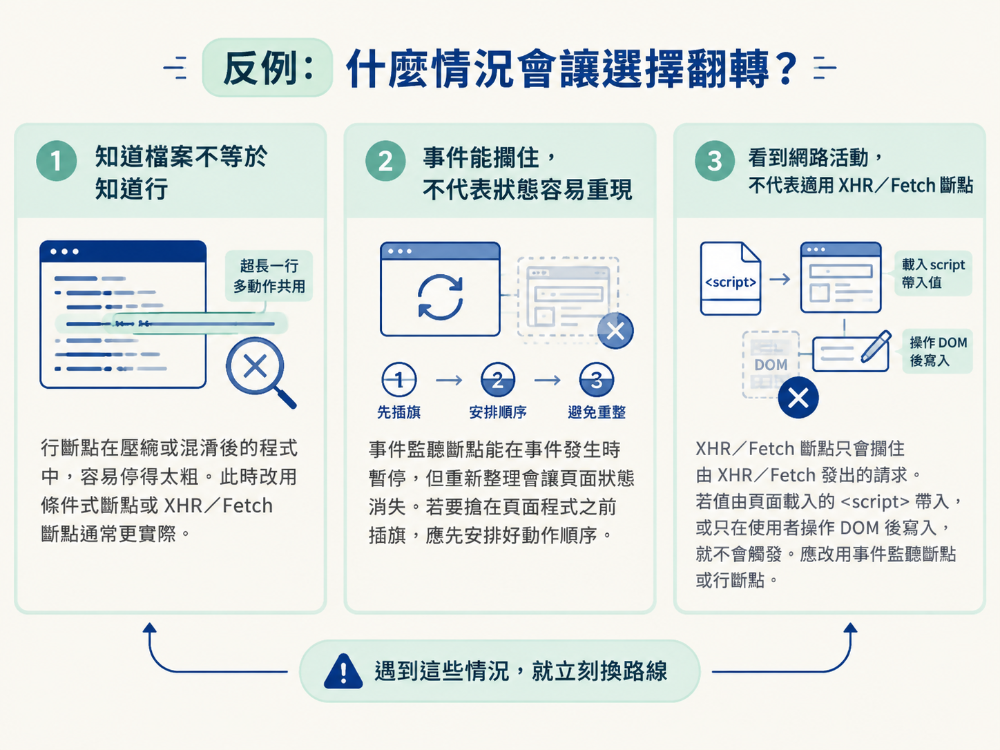

在逆向流程裡，你通常會先從請求找到可疑的值，再用請求堆疊或關鍵字縮小程式範圍。接下來的問題是：這個值究竟在哪個時機、哪個位置產生？
即使你已經找到疑似處理加密值的程式，它仍可能一眨眼就執行完畢。你還來不及查看變數，資料就已經被組好並送出。這時需要用斷點強迫程式暫停，把當下的變數、呼叫堆疊與執行位置攤在眼前。
真正需要取捨的是斷點種類。你可以從已知的程式位置下手，也可以守在事件入口，或直接攔住送出請求的瞬間。選對斷點，就像在值必經的路口設檢查哨；選錯位置，程式不是完全不停，就是停在與目標無關的地方。
學習目標：根據值產生的時機與位置，選擇行斷點、事件監聽斷點或 XHR／Fetch 斷點，讓程式停在真正值得觀察的地方。
前置條件：你已經知道加密值可能在哪（Step 1），也知道如何透過請求堆疊或關鍵字找到候選程式（Step 2）。你會開啟 Sources 面板，也看得到原始碼行號。
| 斷點種類 | 什麼時候停 | 適合什麼線索 | 什麼時候不適合 |
|---|---|---|---|
| 行斷點（Line breakpoint） | 程式執行到指定行時 | 你已經知道，或強烈懷疑是哪一行處理這個值 | 程式被壓縮成超長的一行，或還不知道可疑位置 |
| 事件監聽斷點（Event listener breakpoint） | 指定事件發生時 | 值會在頁面載入或使用者操作時產生，需要從事件入口開始追 | 你無法穩定重現事件，或目標與該事件無關 |
| XHR／Fetch 斷點 | 程式準備發出符合條件的非同步請求時 | 你知道值會由哪個 XHR／Fetch 請求送出 | 值不是透過 XHR／Fetch 傳送 |
三種斷點的出發點不同。行斷點問的是「在哪一行」，事件監聽斷點問的是「由什麼事件啟動」，XHR／Fetch 斷點問的則是「由哪個請求送出」。先看自己手上握有哪一類線索，再決定從哪裡攔截。

行斷點是最直接的選擇。在 Sources 面板中點一下原始碼左側的行號，該行便會出現藍色標記。之後程式每次執行到這裡，都會先暫停。
來看一個可以直接跟著操作的小檔案。這段程式依序設定 x、y 與 z，並將它們印出來：
var x = 1
console.log(x)
var y = 2
console.log(y)
var z = 3
console.log(z)在第二行 console.log(x) 設定行斷點，再重新載入頁面。程式停下來後，可以在 Console 查看 x，也可以把滑鼠移到變數上。此時看到的值會是 1。
這種方法適合你已經透過關鍵字搜尋或請求堆疊，把範圍縮到某段程式的情況。它的優點是直接，缺點也很清楚：你必須先知道哪一行值得停。
如果整份檔案被壓縮成很長的一行，許多操作全擠在一起，普通行斷點就會像在整條高速公路上只設一個攔查點，很難精準抓到目標。這時可以改用條件式斷點，讓條件成立時才停；也可以改從事件或請求下手。
有些值不是在你盯著某一行時產生，而是在頁面載入或使用者操作的瞬間被算出來。等你慢慢找到原始碼再下斷點，程式早就跑完了。這時可以把斷點設在事件入口。
以下示範頁面把一段程式綁在標題的點擊事件上。只要有人點擊標題，就會執行 test01()：
<h3 onclick="test01()">断点的使用和请求堆栈</h3>實際操作時，可以到 Sources 面板的 Event Listener Breakpoints，勾選對應的點擊事件。接著回到頁面點擊標題，程式會先停在事件處理的入口。此時再逐步執行，就能觀察事件觸發後走過哪些程式。
事件監聽斷點也適合用來搶在頁面程式執行之前暫停。例如，你想攔截或改寫 atob 這類原生 API，就必須在頁面使用它之前先動手。
這類操作要特別留意重新整理。頁面一旦重整，剛才設好但尚未生效的改動也會跟著重來。因此常見節奏是：先設斷點，等程式暫停，完成需要的調整，接著繼續執行，不要在中途隨意重整。

如果目標值會放進某個非同步請求，最省力的方式通常不是先猜程式在哪一行，而是直接守在「請求即將送出」的時刻。
DevTools 可以在每次發出 XHR／Fetch 時暫停，也能只攔截網址包含特定片段的請求。程式停下來後，查看右側的呼叫堆疊，就能往上追查請求參數是由誰組出來的。
這個選項很適合銜接 Step 2 的請求追蹤。你已經在 Network 面板看到目標值，也知道它屬於哪個請求，卻還不確定是哪段程式建立參數。此時讓請求本身成為攔截點，比在大量原始碼中逐行猜測有效得多。
如果三個問題都答不出來，通常不是斷點不夠多，而是定位範圍仍然太大。這時應回到 Step 2，繼續用請求堆疊或關鍵字縮小候選程式，而不是到處下斷點碰運氣。
知道檔案，不等於知道行。行斷點原本適合已知位置的情境，但如果程式被壓縮成超長的一行，或混淆後到處使用 && 串接，多個動作可能共用同一行。此時行斷點會停得太粗，改用條件式斷點或 XHR／Fetch 斷點通常更實際。
事件能攔住，不代表狀態容易重現。事件監聽斷點可以在事件發生時暫停，但若操作依賴你剛才建立的頁面狀態，重新整理可能讓那些狀態消失。需要搶在頁面程式之前插旗時，應先安排好動作順序，避免中途重整。
看到網路活動，不代表一定適用 XHR／Fetch 斷點。這類斷點只會攔住由 XHR／Fetch 發出的請求。如果值由頁面載入時的 <script> 帶入，或只在使用者操作 DOM 後寫進欄位，就不會觸發。這時應改用事件監聽斷點或行斷點。

先問線索指向哪裡：知道程式位置，就下行斷點；知道啟動事件，就下事件監聽斷點；知道送出值的請求，就下 XHR／Fetch 斷點。遇到壓縮長行、難以重現的頁面狀態，或不是由 XHR／Fetch 傳送的值，再立刻換路線。
斷點讓程式停下來，但暫停只是開始。下一個要回答的問題是：「這個值是誰算出來的？」程式暫停後，右側的 Call Stack 會顯示一路走到這裡的呼叫路徑。下一節將從這個面板開始，練習沿著呼叫堆疊往回追。